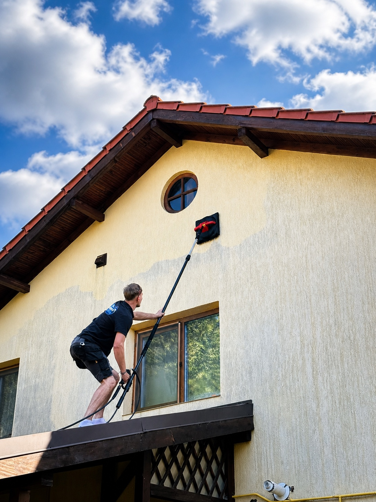
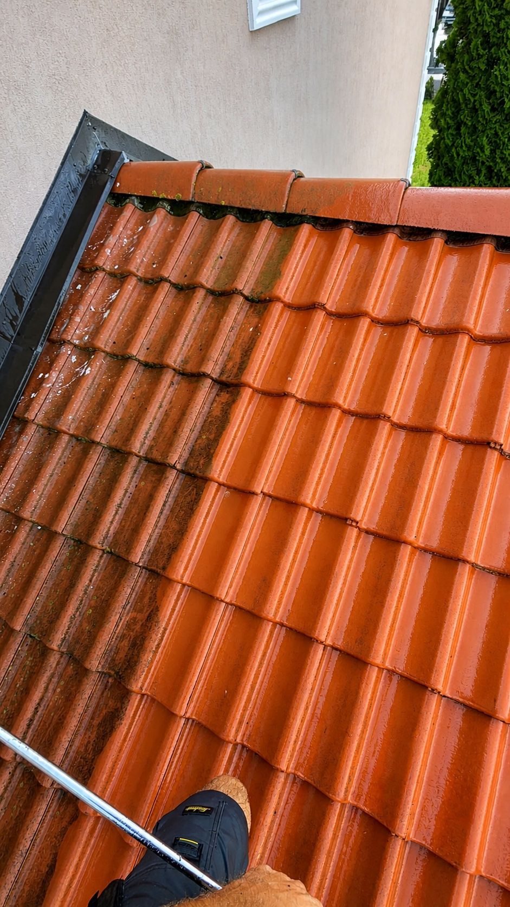

Curățare profesională
Redăm viața
suprafețelor.
De la pavaje și fațade, la acoperișuri, panouri fotovoltaice și spații industriale.
Solicită o ofertă ↗WASH BY PEPELEA
Nu acoperim murdăria.
O îndepărtăm.

Curățare profesională pentru suprafețe exterioare, executată cu echipamente potrivite fiecărei lucrări.
Intervenim pentru proprietăți rezidențiale, comerciale și industriale. Analizăm materialul, accesul și depunerile pentru a alege o soluție potrivită lucrării tale.
Vezi ce curățăm →Ce facem
Suprafețe curate.
Impact vizibil.
Fiecare suprafață are propriile depuneri și propriile nevoi. Ne ocupăm de intervenție, iar tu vezi diferența.
Curățare în profunzime și aplicare de lac cu efect umed, acolo unde suprafața permite.

REZULTAT, NU PROMISIUNI
Se vede
de la prima privire.
O suprafață îngrijită schimbă instant felul în care arată o casă, o curte sau un spațiu de lucru.
Vezi lucrările ↓Galerie
Lucrări
care vorbesc.
O selecție din intervențiile Wash by Pepelea. Apasă pe o imagine pentru a o vedea mai aproape.
Mai mult decât curățare
Orice suprafață
exterioară.
- Case & vile 01
- Curți & alei 02
- Hale metalice 03
- Garduri 04
- Marmură 05
- Spații comerciale 06
Ai o lucrare?
Spune-ne
ce vrei să cureți.
Trimite fotografii cu suprafața, tipul lucrării și localitatea. Îți răspundem cu o soluție potrivită intervenției.